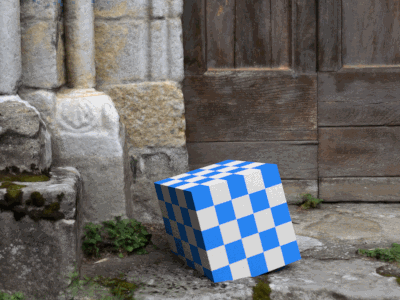
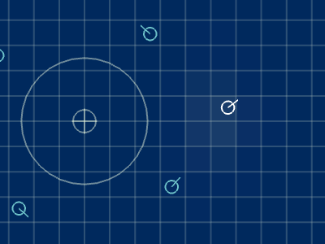
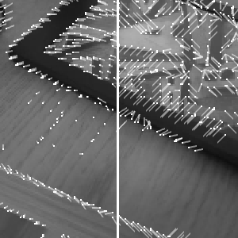

In my master thesis I looked at how to model and integrate man-made objects into 3D scene understanding algorithms. The motivation being that, to program a self-driving car, we want more than just a point cloud of its surroundings. To plan paths and obey rules, we want to know about things like lanes, signs, pedestrians, other cars, and so on. But information like that can only be had by imposing knowledge about our society into algorithms that are, otherwise, oblivious to such concepts. This leads to a dilemma of how to represent all these objects and concepts in a computer program.
Fitting 3D models to 3D reconstructions

While the above research looked at how to represent objects, that is only part of the job; to make use of it, we need to recognize these objects from sensor measurements: like color imagery, or depth data. In my master thesis I look at ways in which you can recover the 3D pose of objects, with the above representation, from color images and point clouds.
Projects
Ascend NTNU
I helped start a robotics team at my university (NTNU) in 2015, with the hope of participating in the International Aerial Robotics Competition, where students from universities around the globe make "autonomous" drones that do cool stuff without a pilot - e.g. flying through an office complex, snatching a USB thumbdrive and replacing it with a fake one.
Somewhat miraculously, we did compete and we did pretty well in the seventh mission, where the challenge is to herd robot vacuum cleaners (Roombas) from one side to another in a 20x20 meter arena. Everything must be done with the push of a single button.
Ascend is still very active, and recruits new members each year. Still with the shared goal of competing in IARC where, at the time of writing (2017), the seventh IARC mission has yet to be solved. You can follow the team's progress at our homepage.
As part of my work at Ascend, I worked on the vacuum cleaner tracking problem. The competition challenge is to build a drone to herd 10 iRoombas across a 20m x 20m arena. The robots have sensors that the drone can physically touch to steer their motion path.
But physically touching it or landing on it means you need to know its position. With external sensing, like beacons or wall cameras, being banned, your only option is to see them from the drone itself.
This project was an interesting learning lesson. I spent six months, as part of my pre-master project on a method that worked by rendering a 3D model of the robot and adjusting the pose estimate to make the render appear identical with the camera image. While insanely cool, it was also insanely complicated, was not predictable, and ran way too slowly. The better approach only took an evening to implement and works by just finding colored blobs.
Inside-out position tracking
As part of my work at Ascend I also worked on the inside-out position tracking problem. A key step in overcoming the seventh IARC mission hinges on your drone's ability to know where it is in the arena - knowing that you're above a roomba is not useful, unless you also know where you are. The arena is patterned with a white grid of 1x1m tiles, that you can use for navigation, and a green edge indicating the herding line. Unfortunately, the arena is otherwise free to vary, and can have all sorts of distractions both inside and outside the grid, like sports markings, people or protection nets.
AI simulation and debugging tool for IARC

This is one of my favorite projects, because I got to make a tool that was actually useful to many people. The members of the AI group at Ascend had requested a simulator that would let them test and debug their algorithms; so I built this tool that simulated only what was needed - no fancy physics or drone dynamics. I also added debugging tools like scrubbing back and forward in history, seeing a list of sent commands, robot status, recording video.
Mission status viewer
Our robotics team built an autonomous drone that can fly along paths inside, without GPS or any external tracking system - only inside-out tracking. With all the things that can go wrong, it's important to have their status available in one place. This GUI tool gives us a live video feed from on-board cameras, lets us draw flight paths, see position state estimates, see commanded velocity and detected obstacles, reset the Kalman filter, and even see CPU load and temperatures. (But the best feature is the drone's tiny animated propellers.)
VDB

In his '86 paper No Silver Bullet, Fred Brooks suggested there is no single development in software engineering that promises even one tenfold productivity increase within a decade. Even today, doubts remain as to whether such a solution will ever come.
Prototyped on a sunday morning in january 2016, this visualization and prototyping tool has been my personal silver bullet, that lets me interact and understand my programs. Check out the github link for more information.
I built this tool to render signed distance function scenes under my favorite type of diffuse lighting. The scene is defined in a shader file that can be reloaded on the fly. Rendering is done with path tracing on the GPU, and can be refined by letting it run longer. Despite being a hobby project, I got a chance to use it heavily for my master thesis, three years after initially building it.
You can grab the source at github and try it out if you can figure it out. You can also read my dev log, where you can see the early, embarrassingly noisy, renders.
I made this program to learn how portals can be rendered using OpenGL. This was a brilliant way to apply the theory I learned about rotation matrices from my robotics classes, into something visual; since figuring out where to render the scene from, behind the portal, is essentially a coordinate system transform! I also made a simple 3D test scene in Blender, and baked the lighting into a texture map using Cycles.